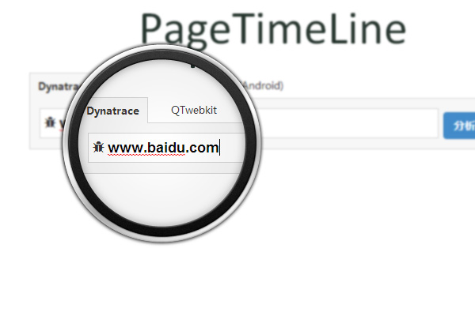

If you can't measure it, you can't manage it.
1、衡量真实用户访问速度，提供精细化性能数据，助你让洞悉产品性能状况
2、涵盖PC、移动、客户端，支持加载期、运行时两个环节的性能监控，支持自定义数据
3、提供预警、周报、收益评估、多维分析、慢速用户分析等功能，额外提供机型、浏览器、系统等辅助数据
已接入产品线：PS、贴吧、地图、知道、百科、文库、旅游等产品
1、衡量真实用户访问速度，提供精细化性能数据，助你让洞悉产品性能状况
2、涵盖PC、移动、客户端，支持加载期、运行时两个环节的性能监控，支持自定义数据
3、提供预警、周报、收益评估、多维分析、慢速用户分析等功能，额外提供机型、浏览器、系统等辅助数据
已接入产品线：PS、贴吧、地图、知道、百科、文库、旅游等产品


PageCheck，集成PageSpeed、Yslow的检测规则，快速发现页面资源加载方面的问题和优化点
Page Timeline，提供浏览器渲染细节，并从中分析出关键耗时操作，给出渲染时序图，支持IE8、webkit、chrome for android、webview四种模式
对外提供 http 服务，支持与其它系统对接
1、集合各产品线的优化经验，提供专业的性能优化方案
2、与UAQ、CDN、ORP合作，提供优化基础服务
3、与FIS合作，解决了资源加载这一性能优化的关键问题
与PS、贴吧、知道、百科、文库、地图hao123等产品线合作解决性能问题